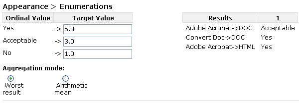
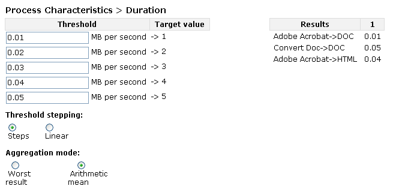

This page explains how the transformation of measured leaf values in Plato works.

This page explains how the transformation of measured leaf values in Plato works.
Values in the requirements tree are measured in different units (seconds, euro, bits, goodness values). To be able to aggregate the different values they have to be transformed to a uniform scale. Experience has shown that a scale with the resolution of discrete values 0-5 with 0 being an unacceptable value and 5 the best possible result works very well.
For every leaf in the tree a transformation table has to be created:
The measured values from the evaluation are shown next to the
transformation tables.
To help you select the correct numeric
values for the transformation, all the measured results are shown in
a table to the right of the transformation table. For every
alternative the sample records (numbered one to number of sample
records) are shown in one line.
Additionally an
Aggregation Mode has to be selected:
Below are example transformations for ordinal values and numeric
values.
Transformation of ordinal values
In this example the enumerations in a document are evaluated. If the
Enumeration is available and like it is in the original the value
'yes' is assigned. For an enumeration that is still supported but
changed, 'acceptable' would be selected. If the enumeration is not
supported anymore 'no' is chosen for this values.
The
transformed values are '5' for 'yes', as this is the best possible
result, '3' for acceptable and '1' for 'no'. We did not assign '0' to
'no', as it is not a knock-out criterion in our scenario.
Next
to the transformation table we can see the results for every
alternative for the one sample record we have in our fictional plan.
As an aggregation method 'Worst' is selected. If we would have more
than one sample record and we have 'acceptable' for one record and
'yes' for every other record, the final value for this alternative
would still be '3', as 'acceptable' is the worst result of all
records for this alternative.

Transformation of numeric values
This example shows how
many MegaBytes per second an alternative is able to handle. The
measured values are again shown next to the transformation table.
'0.05' MByte/second is our best result, so we assigned '5' to this
value. '0.01' was the worst result, so '1' is assigned. The other
values are evenly distributed between these values.
'Steps' is
selected for Threshold stepping, so if an alternative would be able
to handle 0.019 MByte/second, the resulting value would still be '1'.
As Aggregation Method "Arithmetic Mean" has been selected. If we
would have two sample records, 0.01 MByte/second for one of the
records and 0.02 MByte/second for the other record the resulting
transformed value would be the arithmetic mean of '1' and '2' ->
'1.5'.
